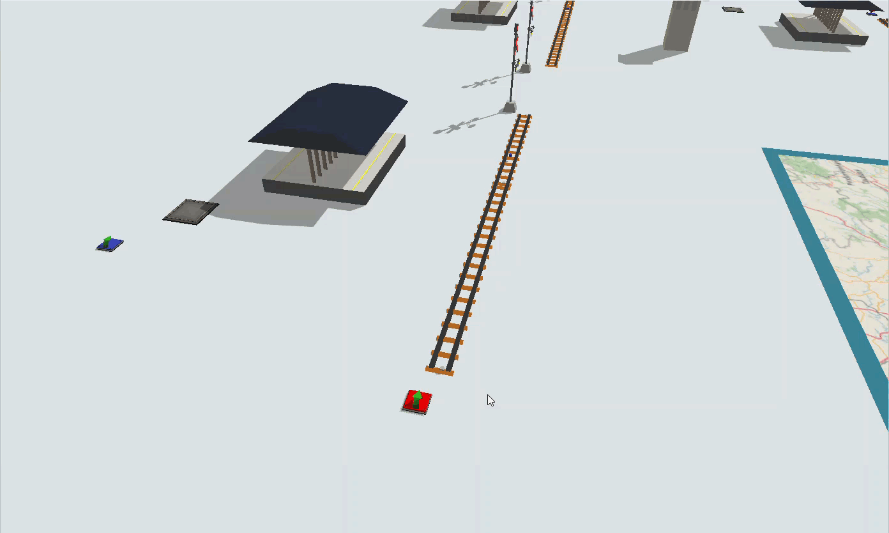
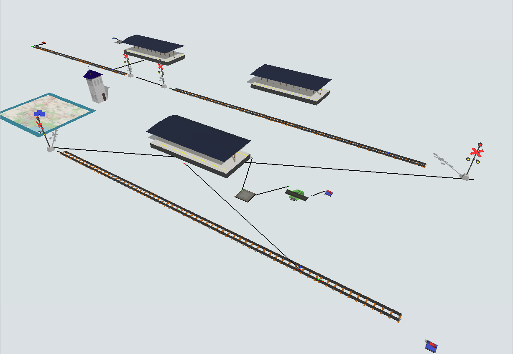
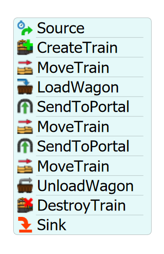
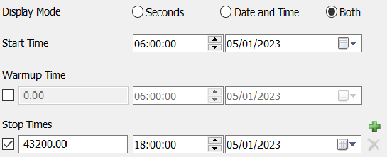

Exercise Information
A passenger train, with the capacity to transport 40 people, travels through a
simple railway. In the map, the train goes from point A, where it collects passengers,
through point B for a quick stop, all the way to point C, where the passengers
are left. Passengers wait at the Station in point A, and leave in a line after
the Station in point C. Four trains go through the path each day, in intervals of 3 hours.
They start their schedule at 6 a.m. and finish it at 6 p.m.
Step 1 Creating objects
In order to achieve the solution for the problem, you should create the
following objects:
- Create one SourceTrain.
- Create two Rails.
-
Connect SourceTrain to the Rail1 (using the A key) and then connect
Rail1 to Rail2 via proximity.
-
Create one RailControlPoint and put it on Rail2. The RailControlPoints should change
color if they are connected correctly to the Rails. We recommend the creation of the
RailControlPoints in a empty space and, after that, you can place it on the Rails.
-
Create a Station using the Passenger Station model and connect the
central port to the RailControlPoint (using the S key).
-
On the Station, set "Max Weight" to 40, "Units Per FlowItem" to 1 and
"FlowItem Class" to Man.
-
Create one Queue and connect it to the Station (using the A key).
-
Create one Source and connect it to the Queue (using the A key),
set the "Arrival Style" to Arrival Schedule. Check "Repeat table" and click
on "Edit Table". On table, increase "Arrivals" to 2 and set for Arrival1 time 0
and quantity 40, for Arrival2, time 10799 and quantity 0. Set the "FlowItem Class"
to Man.
-
Create the GISMap, and create three points in it using the GisMap library. Connect
the three points to form the path, select the type of road to Railways.
-
Create a GISportal and connect it to the initial point in GISMap (using the A key).
-
Create another GISPortal and connect it to point B in GISMap (using the A key).
Connect the GISPortal1 to GISPortal2 as well.
- Create two more Rails.
-
Connect the GISPortal2 to the first Rail of the second path (using the A key)
and then connect Rail3 to Rail4 via proximity.
-
Create one more RailControlPoint and put one on Rail4. Create another Station using the
Passenger Station model and connect the central port to the RailControlPoint (using
the S key).
-
Repeat the steps of creating the GISPortal3 and GISPortal4, connecting them to points B and C,
then creating another two Rails and connecting GISPortal4 to it. It is important to
connect the GISPortal3 and GISPortal4 amongst each other as well.
-
Repeat the steps of creating a Passegenger Station and a RailControlPoint to Rail6 and connecting
them through a central port.
-
Create a Sink and position it at the end of Rail6.
-
Finally, create a Queue and connect the Station to it, set it to stack flowitems in
a horizontal line.
-
Create a Processor and a Sink, set the process time to 5 seconds. Lastly, connect the Queue
to the Processor, and the Processor to the Sink.

Your model should be looking like this:

Step 2 Processflow Configuration
In order to achieve the solution for the problem, you should create the
following processflow tasks:
- Create an Inter-Arrival Source.
- Create a "CreateTrain" activity.
- Create a "MoveTrain" activity.
- Create a "LoadWagon" activity.
- Create a "SendToPortal" activity.
- Create a "MoveTrain" activity.
- Create a "SendToPortal" activity.
- Create a "MoveTrain" activity.
- Create an "UnloadWagon" activity.
- Create a "DestroyTrain" activity.
- Create a Sink.
Your processflow should be looking like this:

To configure your processflow tasks follow the steps:
- On source, set the "Inter-Arrivaltime" to 10800.
-
On "CreateTrain" activity, point the "Source Train" reference to your SourceTrain.
Set "Max Weight" to 40 and the "Locomotive Type" to Passenger.
-
On "MoveTrain" activity, set train reference to "token.train" and destiny to the
RailControlPoint on Rail2.
-
On "LoadWagon" activity, set train reference to "token.train", "Control Point"
reference to the RailControlPoint on Rail3 and "Load Type" to a "Load Time Constraint"
of 60 seconds.
-
On "SendToPortal" activity, set the portal reference to the GISPortal1.
-
On the second "MoveTrain" activity, set train reference to "token.train" and destiny to
the RailControlPoint on Rail4.
-
On the second "SendToPortal" activity, set the portal reference to the GISPortal3.
-
On the third "MoveTrain" activity, set train reference to "token.train" and destiny to
the RailControlPoint on Rail6.
-
On "UnloadWagon" activity, set train reference to "token.train" and "Control Point"
reference to the RailControlPoint on Rail6.
-
On "DestroyTrain" activity, set train reference to "token.train" and "Sink" reference
to the Sink next to Rail6.
Lastly, configure your simulation time to start at 6a.m. and end at 6p.m.

With this configuration your model is ready.